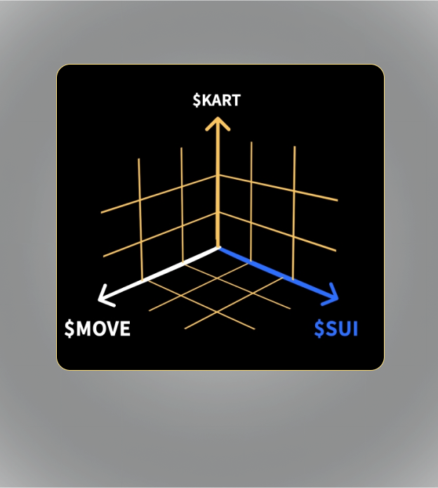

{{define "section-10"}}

<div id="token" class="space-top-2 position-relative bg-dark overflow-hidden bg-section-3">
    <div class="container-xl container-fluid space-md-2 px-0 px-md-12 px-lg-12">
  
   <div class="row justify-content-lg-between align-items-md-center"> 
      <div class="col-lg-6 mb-3 mb-lg-0 order-md-0 order-2">
        <div class="mb-3">
          <div class="group-1261153018-EHC">
            <p class="karma-protocol">Kartscription redefines digital asset interaction on the Sui blockchain, introducing an innovative mix of NFTs, coins, predictive tools, and gaming elements encapsulated in a concept: the bidirectional graph-token. This groundbreaking approach positions Kartscription at the forefront of digital innovation, transforming our engagement with blockchain technology.</p>
            
          </div>
        </div>
        
      </div>
  
      <div class="col-lg-6 mb-3 mb-lg-0 order-md-0 order-1">
        <div class="position-relative">
          
          <!-- End SVG Elements -->
        </div>
      </div>
    </div>
  </div> 
      </div>

{{end}}